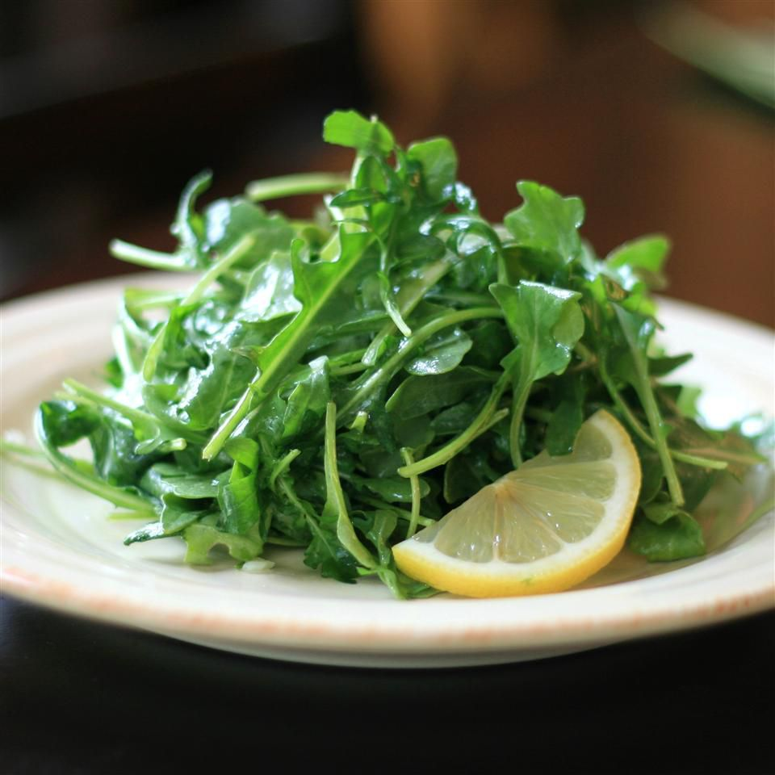

Home

Salad
Description
Lemon juice combines with mild rice vinegar in a dressing that's both sprightly and slightly sweet to dress young, tender lettuces.
Ingredients
- 1 shallot, finely chopped
- 1 ½ teaspoons honey
- 1 teaspoon Dijon mustard
- ¼ teaspoon salt
- ¼ cup extra-virgin olive oil
- 2 tablespoons fresh lemon juice
- 2 tablespoons rice vinegar
- 16 cups arugula
Steps
- Combine shallot, honey, mustard, and salt in a jar with a lid; add olive oil, lemon juice, and vinegar. Cover jar with lid and shake until dressing is thickened.
- Place arugula in a bowl and drizzle dressing over greens; toss to coat.
Cook's Note
You can make a larger batch of dressing by simply doubling or tripling the amounts and store it in the fridge for a week or two. This dressing can also do double duty as a marinade for chicken or thick, firm-fleshed fish.
Any variety of spring lettuce such as Bibb or red leaf can replace the arugula.